We have talked many times about focal length, especially for documentary and street work, where most people struggle between 35 and 50 mm. Today I want to talk about another length: 28 mm.
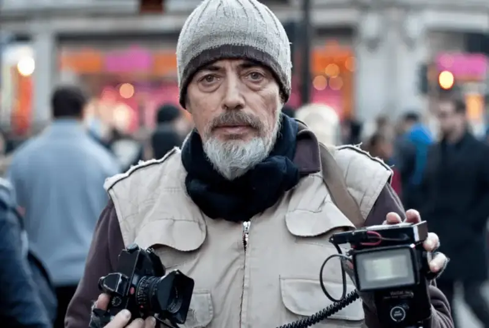
Magnum photographer Bruce Gilden
His long-time street setup: a Leica M6 with a 28 mm lens
Now many camera makers focus on 28 mm lenses, and more shooters try 28 mm. For example, the popular Leica Q2 street camera uses a fixed 28 mm lens. So shooters have more to worry about: compared with 35, should you choose 28?
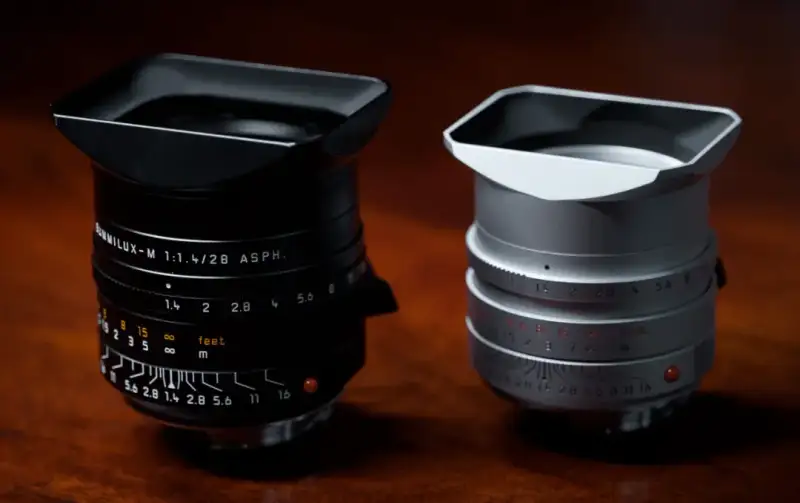
28 or 35?
Angle of view
The core difference between focal lengths is the angle of view.
For mid and long telephotos, 75 and 90 mm are called portrait lenses because their narrow angle compresses the image. You step back, keep a distance from the model, and still fit the face in, which also avoids pressuring them.
APO-Summicron-M 90 f 2 ASPH. © Peter
A wide lens does the opposite. It spreads out. It includes more, shows the relation between subject and setting more easily, and makes the scene feel as if it reaches out of the flat image (especially an ultra-wide). The visual impact is naturally greater.
35/1.4 (top) & 28/2 (bottom) ©️ streetsilhouettes
Compared with 35, a 28 mm lens shows more.
A different angle is not just a wider final frame. It changes how you shoot: 28 mm pushes you to get closer.
M6+ELMARIT-M 28 f/2.8 ASPH. © Gerard0804
M6+ELMARIT-M 28 f/2.8 ASPH. © Gerard0804
For street work at 28 mm, you cannot stand far away and shoot a person. You have to step to about one and a half meters. Awkward moments are unavoidable, and then your camera's quiet mode and fast composition skills are tested.
Perspective
How does a different perspective feel? We often say that street work at 28 mm has a stronger sense of presence. What is presence?
Presence is the feeling of being inside the scene. You feel as if you are in the frame only when the depth and perspective are strong.
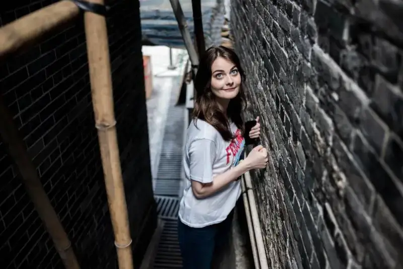
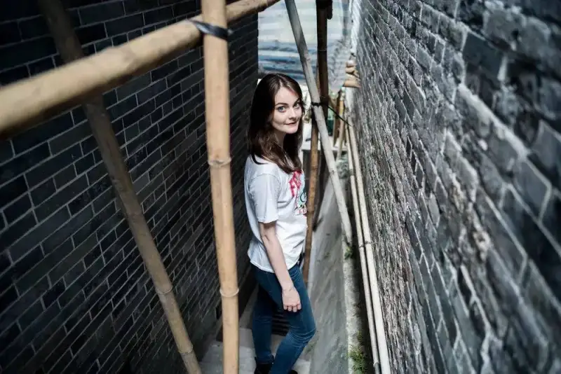
35/1.4 (top) & 28/2 (bottom) ©️ streetsilhouettes
Compared with 35, a 28 mm lens has stronger perspective.
A wide lens includes more, with near objects large and far ones small. The spatial perspective is strong, and the sense of presence is greater.
Depth of field
Depth of field depends not only on aperture, but also on focal length and the distance between subject and background.
At F2, with the subject two meters from the background, how else can you change depth of field? By focal length. In the same conditions, 35 mm gives shallower depth than 28 mm, though the gap between these two is small. Compare 21 mm with 90 mm, and the effect is clear.
35/1.4 (top) & 28/2 (bottom) ©️ streetsilhouettes
A 35 mm lens gives shallower depth of field.
Depth of field is also a factor in choosing a focal length. If you like wide-aperture small scenes, 28 mm may not suit you as well. 35 and 50 mm blur the background better.
Conversely, if you do not care much about blur, the wider, more impactful 28 mm is a good choice for street and travel work.
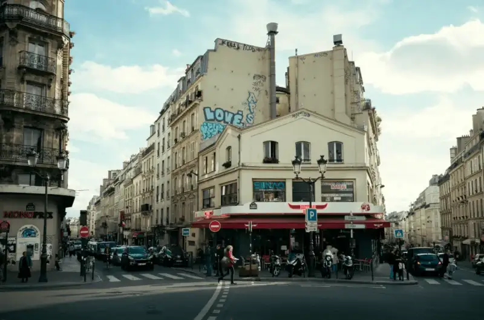
M9+ELMARIT-M 28 f/2.8 ASPH. ©️MK
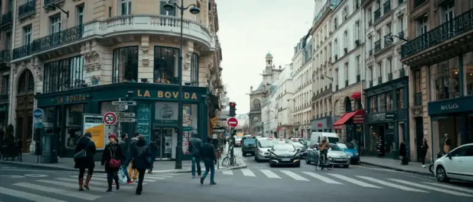
M9+ELMARIT-M 28 f/2.8 ASPH. ©️MK
Leica and Hasselblad 28 mm lenses
# Leica Summicron-M 28mm f/2 ASPH.
The Summicron-M 28mm f/2 ASPH. came out in 2000. Its optical design is lovely, with the bloodline of the Summilux ASPH family, and it broke the classic double-Gauss design.
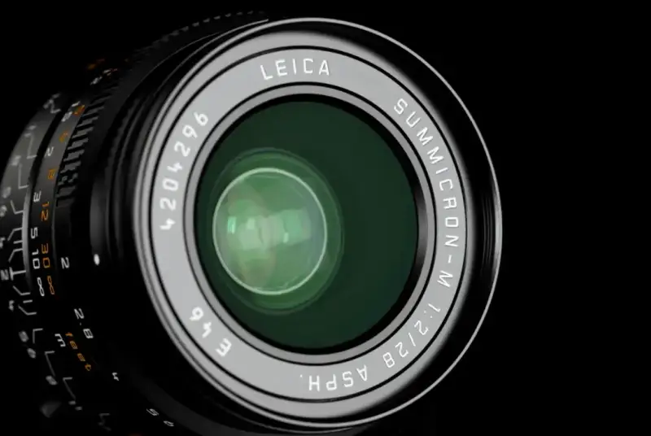
The 28/2 is often compared with the 28/2.8, and their character differs a lot. The 28/2 Summicron ASPH. is of course sharper.
Its distortion is roughly on par with the ELMARIT 28 mm. At full aperture, the corners lose about two stops, similar to the ELMARIT at f/2.8. In normal use, this falloff is negligible.
LEICA M (Typ 240)+Summicron-M 28 f/2 ASPH.
©️ Teemun hetket
M10+Summicron-M 28 f/2 ASPH.
©️ jacktaka
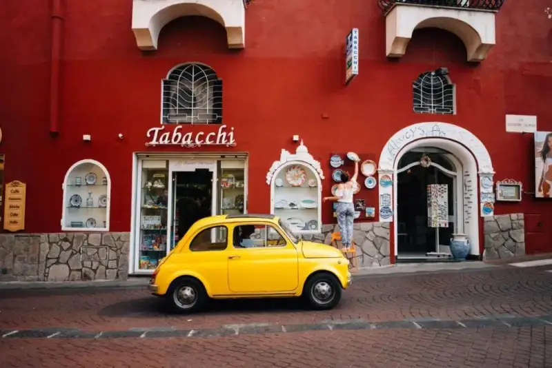
M10+Summicron-M 28 f/2 ASPH.
©️ jacktaka
Though a modern lens, its depth and layers have the feel of an older lens. Its blur suits documentary work, rich in layers rather than simply smooth.
LEICA M (Typ 240)+Summicron-M 28 f/2 ASPH.
©️furcafe
Summicron-M 28 f/2 ASPH. ©️ vogelius
# Leica Summicron-M 28 f/2 ASPH.
The SAFARI military green
Summicron-M 28mm f/2 ASPH Reporter limited edition has the same optics as the normal version, but the same military green finish as the M10-P Reporter. It looks like a war photography lens.
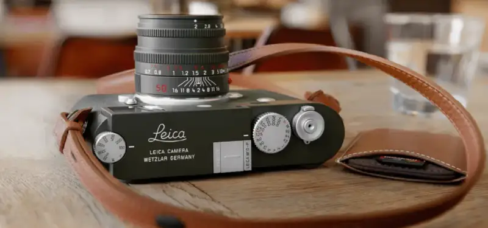
* For this look alone, you have to own one.
For landscape or street work you do not need a very wide aperture, and it is enough outdoors. What matters is that this lens has first-class color, sharpness, and resolution. It is small, portable, and has very little distortion.
# Leica ELMARIT-M 28 f/2.8 ASPH.
Leica made five versions of the Elmarit 28/2.8.
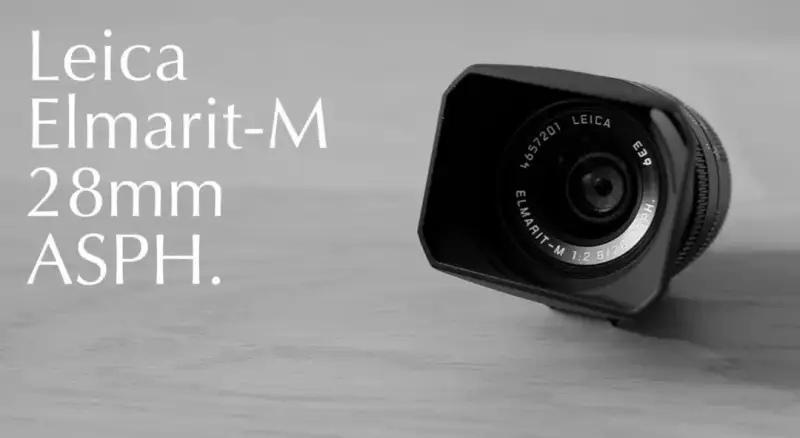
The five versions each have their own character. In users' words: version one is vivid, two is rich, three is restrained, four is warm, and the ASPH. version is balanced. As a modern lens, the ASPH. version naturally has higher image quality, with contrast and resolution greatly improved over earlier generations.
M9+ELMARIT-M 28 f/2.8 ASPH. ©️MK
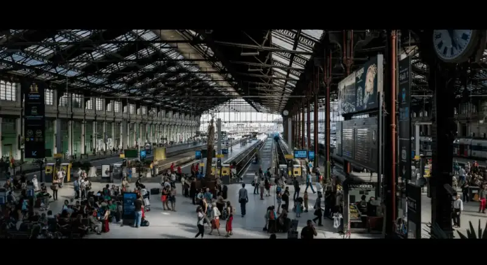
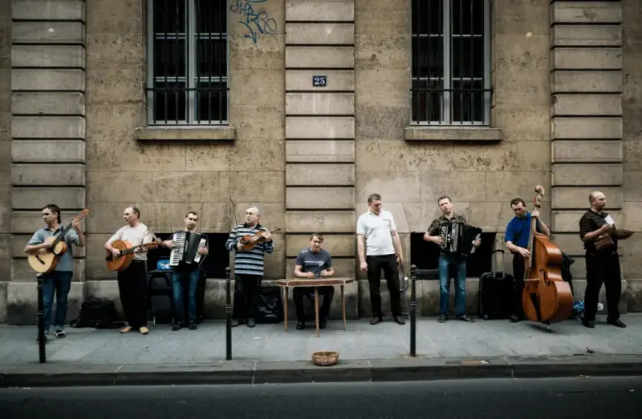
M9+ELMARIT-M 28 f/2.8 ASPH. ©️MK
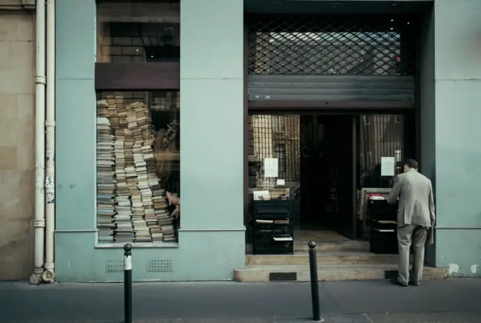
M9+ELMARIT-M 28 f/2.8 ASPH. ©️MK
The common problem with 28 mm lenses is barrel distortion. This ASPH. version controls it well and mostly solves it, which suits digital bodies. On film bodies, its layer transitions are also excellent.
# Hasselblad XCD 30mm F/3.5
Equivalent to 24 mm on a 35 mm frame, the XCD 30mm F/3.5 is the Hasselblad lens closest to 28 mm. It combines high image quality with a compact, smart design, and is the versatile wide lens of the XCD series.
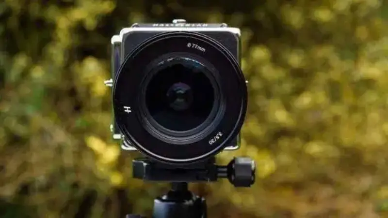
It gives a 71 degree horizontal angle, fitting wide scenery without exaggerated distortion. It handles professional landscape, architecture, and astrophotography with ease.
X1D2+XCD 30 ©️Isabella Tabacchi
X1D2+XCD 30 ©️Isabella Tabacchi
X1D2+XCD 30 ©️Isabella Tabacchi
XCD 30 ©️Swee Oh
XCD 30 ©️Tobias Hägg
Beyond big landscapes and architecture, it is small and light enough to carry with a slim body. As a main travel lens, it deftly follows you through streets and alleys to find the human stories hidden in the city.
Though 28 mm is not seen as a must-have like 35 and 50 mm, the small wide lens is actually more characterful. It is not as middle-of-the-road as a standard lens. It takes in more in everyday settings, covering street, small scenes, and landscape.
Now people shoot more with phones, whose lenses are around the 28 angle, which makes 28 mm more familiar. Add its flexibility for documentary and landscape, and ever lighter designs, and its future potential is large.
So, will you choose a 28 mm lens?